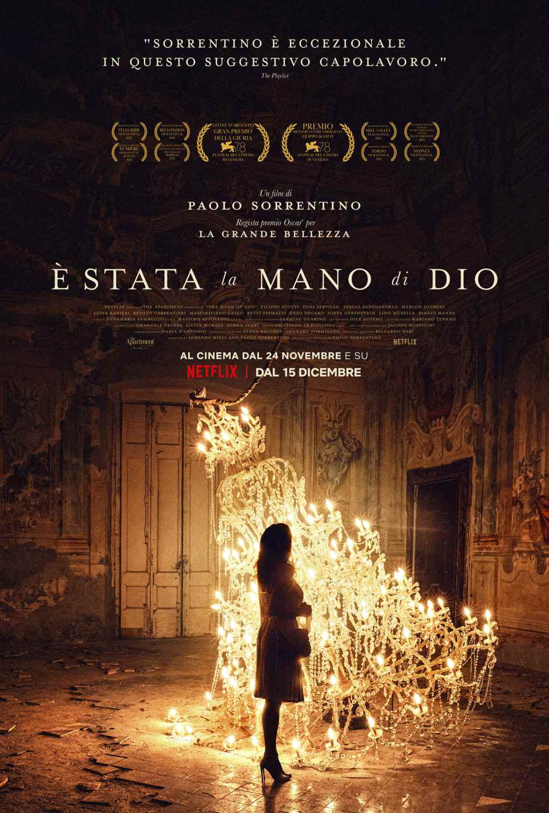
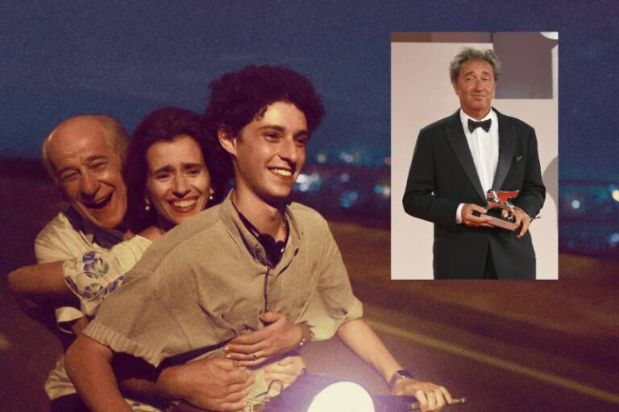

|  | Fabio è uno dei tre figli di Saverio e Maria, coppia della buona borghesia napoletana, circondata da vicini, parenti e amici che condividono allegria e problemi famigliari. Adolescente incerto sul futuro dopo un diploma di maturità classica ancora da conquistare, Fabio è intimidito dalle donne e innamorato della zia Patrizia, di grande sensualità e di inquietanti allucinazioni. Intorno a lui ruota un caleidoscopio domestico fatto di scherzi materni e stoccate paterne, di un fratello che sogna il cinema e una sorella che vive chiusa in bagno, più i tanti personaggi che costituiscono un teatro partenopeo da far invidia ad Eduardo. Ma questo universo protettivo ed esilarante è destinato a scomparire all'improvviso, creando un vuoto che, forse, potrà essere anche fonte di una nuova libertà creativa. |  |